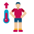

TABATA TIMER
Start
Tips for Tabata exercises
-
1
Understand the Timing :Tabata involves 20 seconds of intense exercise followed by 10 seconds of rest. Maintaining this timing pattern is crucial for the workout's effectiveness
-
2
Warm-Up Thoroughly: Always warm up before starting a Tabata session to prepare your body for the high-intensity workout. A dynamic warm-up is recommended to get your muscles ready for the intense effort
-
3
Maintain High Intensity: Tabata requires giving 100% effort during the 20-second intervals. Push yourself to the limit to maximize the benefits of the workout
-
4
Choose Appropriate Exercises:Opt for exercises that are easy to perform and allow you to maintain a continuous rep, such as burpees, jump squats, or stationary biking. Avoid complex movements that may hinder your performance
-
5
Avoid Overcomplicating: Stick to the simplicity of Tabata. Avoid incorporating too many movements or equipment, as the essence of Tabata lies in its straightforward and intense structure
-
6
Proper Recovery: Allow for adequate recovery time between Tabata sessions, typically 24 to 72 hours, to prevent overtraining and ensure optimal performance
-
7
Listen to Your Body: Pay attention to your body's signals during the workout. Adjust the intensity and exercises based on your fitness level and comfort to prevent injury and optimize results
-
8
Breathing Technique: During the intense 20-second work intervals, remember to breathe deeply and rhythmically. Inhale during the easier part of the exercise and exhale forcefully during the more challenging phase. Proper breathing can help optimize oxygen intake, improve performance, and prevent fatigue during Tabata sessions.
- Jumping Jacks
- High Knees
- Burpees
- Mountain Climbers
- Jump Squats
- Push-Ups
- Plank
- Jump Rope
- Box Jumps
- Stationary Biking
What is Tabata
The Tabata protocol, developed by Professor Izumi Tabata, involves ultra-intense exercise for 20 seconds followed by 10 seconds of rest, repeated for 4 minutes (8 cycles). Athletes trained with this method four times a week for six weeks, gaining comparable aerobic improvements to those doing 60 minutes of steady-state training per day. The Tabata group started lower and achieved greater overall aerobic gains, while also experiencing benefits in anaerobic capacity.